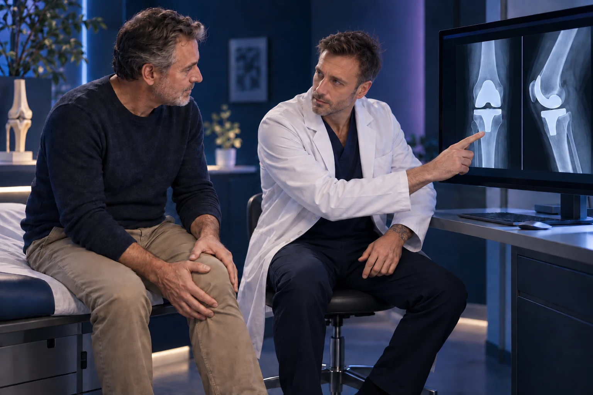

Prothèse de hanche ou de genou douloureuse : faut-il la changer ?

Une douleur autour d’une prothèse ne conduit pas automatiquement à son remplacement. La première étape consiste à en rechercher la cause : la proposition dépend du délai depuis l’intervention, de l’évolution, de l’examen et des résultats du bilan. Une reprise chirurgicale se prépare pour traiter un problème identifié, avec un bénéfice attendu et des limites expliquées.
Pourquoi commencer par l’histoire de la douleur ?
Une gêne apparue après une période confortable, une douleur présente depuis l’opération et une douleur brutale après une chute ne se présentent pas de la même manière. Notez le moment d’apparition, les activités déclenchantes, la localisation et les symptômes associés. Expliquez ce que vous pouviez faire auparavant et ce qui est devenu difficile.
Cette chronologie est un point de départ utile pour la consultation. Vous n’avez pas à choisir vous-même entre « usure » et « descellement ». Un mot trouvé dans un compte rendu ne remplace pas l’analyse de l’ensemble du dossier. Apportez vos anciennes radiographies et le compte rendu opératoire si vous les possédez.
Quelles causes peuvent justifier une reprise ?
Au genou, une usure, un défaut de fixation à l’os, une instabilité, certaines raideurs ou une fracture autour de l’implant peuvent conduire à discuter une reprise. Le mot « descellement » désigne une perte de fixation de la prothèse. La stratégie dépend des pièces concernées et de l’état des tissus. AAOS, reprise de prothèse de genou.
À la hanche, l’usure, le descellement, les luxations répétées ou une fracture peuvent également nécessiter une nouvelle intervention. Le remplacement peut concerner une partie de la prothèse ou l’ensemble des composants. Il ne se décide pas sur l’âge de l’implant seul. AAOS, reprise de prothèse de hanche.
Imaginez un ensemble mécanique fixé à un support vivant : la pièce articulaire, sa fixation et l’os environnant doivent être analysés. Cette comparaison est limitée, mais elle aide à comprendre pourquoi « changer la prothèse » peut désigner des opérations très différentes.
Pourquoi rechercher une infection ?
Une infection autour d’une prothèse peut se manifester de façons variées, parfois longtemps après l’intervention. Une augmentation inexpliquée des douleurs, un gonflement ou un écoulement doivent être signalés. L’absence de fièvre ne suffit pas à exclure une infection. AAOS, infection après remplacement articulaire.
Le bilan peut comporter des analyses sanguines et, selon le contexte, un prélèvement du liquide articulaire. Une anomalie isolée n’établit pas toujours le diagnostic : plusieurs informations doivent être rapprochées. La prise en charge d’une infection peut associer chirurgie et antibiotiques, avec une stratégie différente de celle d’un simple problème mécanique. AAOS, diagnostic et traitement d’une infection de prothèse.
Quels examens sont utiles ?
Le chirurgien examine la mobilité, la stabilité, la marche et les zones douloureuses. Les radiographies constituent un élément important du bilan ; d’autres examens sont prescrits selon la question à résoudre. La comparaison avec les clichés antérieurs peut aider à comprendre une évolution. AAOS, évaluation avant reprise de prothèse de genou.
Le meilleur examen n’est pas nécessairement le plus sophistiqué. Demandez ce que l’examen recherché doit permettre de confirmer ou d’écarter. Si vous avez déjà réalisé plusieurs examens dans différents établissements, apportez-les tous afin d’éviter une lecture fragmentée de votre histoire.
Une reprise est-elle comparable à la première opération ?
Une reprise peut être plus complexe : il faut tenir compte de l’implant en place, de la qualité de l’os et des tissus voisins. Des implants spécifiques ou une reconstruction osseuse peuvent être nécessaires. Les suites et les résultats attendus ne se déduisent donc pas de votre première expérience. AAOS, particularités d’une révision de hanche.
Pour préparer la décision, demandez quelles pièces seraient changées et quel problème ce geste doit corriger. Faites préciser les risques, l’appui autorisé après l’intervention et l’aide nécessaire à domicile. Une opération plus importante n’est pas justifiée par la seule volonté de « faire quelque chose » : son objectif doit être compréhensible.
Que faire pendant le bilan ?
Respectez les consignes reçues concernant la marche, les aides et les traitements. Ne forcez pas une activité qui provoque une aggravation nette sans en parler à l’équipe. Notez les changements de symptômes et les questions qui apparaissent entre deux rendez-vous. Un relevé court et daté est souvent plus utile qu’une estimation rétrospective difficile.
Si vous avez besoin d’une explication supplémentaire ou d’un autre avis, demandez les documents nécessaires : comptes rendus, images et résultats biologiques. Le but est que vous compreniez pourquoi une surveillance, un traitement ciblé ou une reprise est proposé, et dans quelles circonstances le plan devrait être réévalué.
Quand demander un avis rapide ?
Un écoulement de cicatrice, une rougeur qui s’étend, un gonflement inhabituel ou une dégradation importante doivent être signalés rapidement. Après une chute, une douleur brutale ou une impossibilité d’appui nécessite également une évaluation. En cas de malaise important ou de difficulté respiratoire soudaine, appelez le 15 ou le 112.
Vous pouvez prendre rendez-vous avec le Dr François Lozach à Sète pour organiser ce bilan. L’objectif est de comprendre la douleur avant de choisir une solution, en tenant compte de vos priorités et des possibilités réelles de récupération.
Ces conseils sont d’ordre général et ne remplacent pas un avis médical personnalisé.